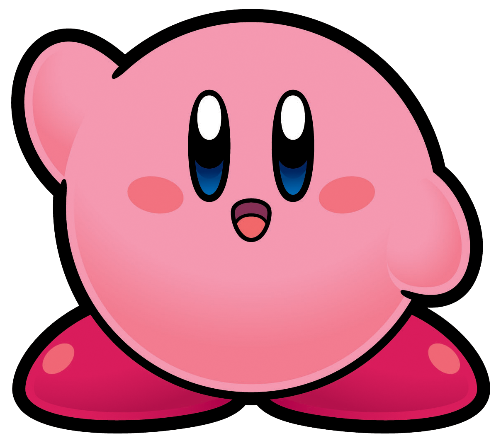

Introduction To Kirby
Kirby is a pink, round creature that can absorb (almost) anything without getting full, and sometimes can even steal the abilities of his opponents. He is known to be the embodiment of good and is well respected by anybody who knows him, including his "enemies" like King Dedede and Meta Knight. The Pink Puffball has also been known to defeat many gods and world ending threats, such as Zero and Void Termina, to defend his planet known as Popstar.